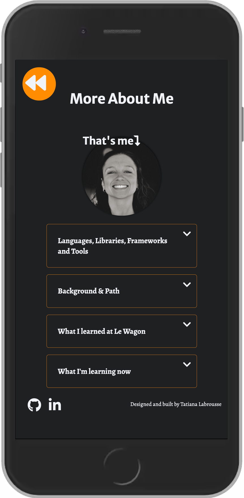
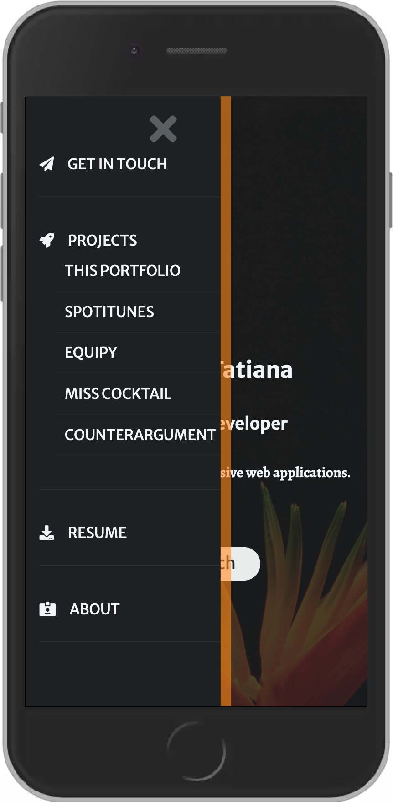

This Portfolio
Created with HTML, CSS, Javascript, Webpack, deployed on Github Pages
Description
In an effort to get back to basics, this portfolio was built on vanilla html, css and some javascript (Es6). I used Webpack with Babel so as to be able to transform it later on. I first designed it on Figma before getting into coding. I wanted to keep things simple, clean but memorable. A bit of JS and CSS animation was used to accentuate information to be noticed. It is an ongoing project and is currently being transformed into a React SPA.


Features
- RESPONSIVE: I used CSS grid and Flexbox within my media queries (just 2) to make the content responsive.
- MENU : The circular multi-layer menu was designed using a circle in absolute position. The layers are simply Divs within each other with different sizes and transition speeds.
- TOGGLE: In order to offer a better UX and not have to much information on my About page, CSS and very little javascript were used to create the toggle elements containing paragraphs.